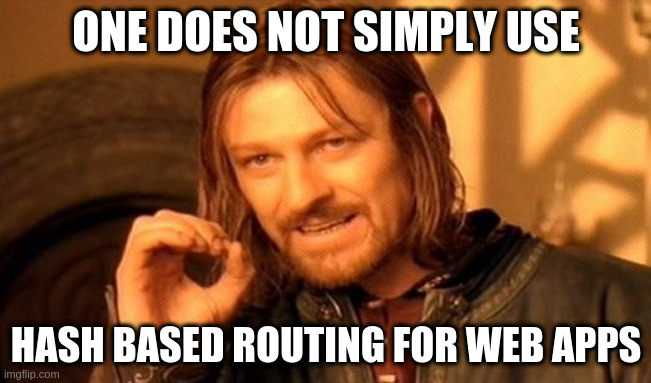

What is Ember?
MVC Javascript Framework
Ember vs Other JS frameworks
React => Library for creating components
Vue => Framework
Ember == Angular
Why Ember?
Ruby on Rails
Strong conventions
Developer Productivity
Single Page Application
Components of SPA
Routing in the browser
Client-side Routing
Hash-based routing
https://support.freshdesk.com/#tickets
https://support.freshdesk.com/#contacts
Downsides of Hash-based routing
URL-based routing
https://support.freshdesk.com/tickets
https://support.freshdesk.com/contacts
History API
Manipulate the user's browsing history
History API
| back() | Goes to the previous page in the history. |
| forward() | Goes to the next page in the history. |
| go(index) | Goes to a specific page in the history. |
| pushState(state, title, URL) | Pushes the data in the history stack and navigate to the provided URL. |
| replaceState(state, title, URL) | Replaces the most recent data in the history stack and navigates to the provided URL. |
State management
Internal State
External State
API & Data
Templating
Handlebars
Helpers
outlet
yield
Styling
Build Pipeline
Creating Ember projects
ember-cli
Official CLI for creating & managing Ember.js apps
npm install --global ember-cli
Ember Addons
Generating new Ember addon
Dummy app
Addon structure
Ember Observer
ember-auto-import
ember-new-output
Code splitting
Ember Engines